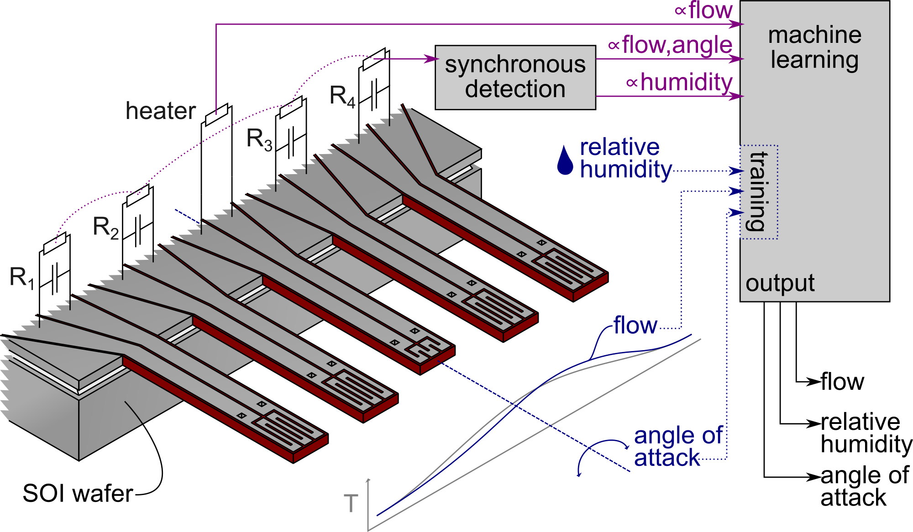

Publications

A Machine Learning Enhanced MEMS Thermal Anemometer for Detection of Flow, Angle of Attack, and Relative Humidity
Thomas Leigh Hackett, Jeong Young Choi, Remco Sanders, Tomas van den Berg, Dennis Alveringh, Jurriaan Schmitz
Published in IEEE Sensors Letters (2024)